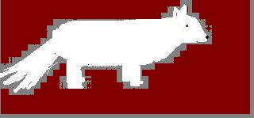

Sam has a tan and white body and a tad of gray ears. He is skinny and fluffy with out his haircut. When he has his haircut he is more playful and is hyper then ever!
His behavior towards other dogs is weird because he barks, sniffs the dog, then thinks “This is an average dog, who cares!” Then he lies down and naps! It’s hilarious!
When he meets a new human he’s never seen before Sam is so sweet and cute. His tail starts to wag constantly and his eyes turn all cute and he starts walking around back and forth all excited. He sniffs the person until he knows there scent then he lies down for another nap. :)
What Sam loves to do is nap. I know old dogs like to nap a lot but my dog can nap all day if he wants to! He will not eat unless his nap of the day is fulfilled. I still have Sam to this day, but he is old, he has arthritis and walks slow, he takes naps all day and acts really lazy outside in the shade. He never fetches, never plays around, all he does is relax. He is 11 in human years (that’s 77 in dog years). He is one year older than me. He is a loving sweet dog; he is the only dog for me! :)
Tucker was all white! He was extremely fluffy, skinny, and soft. He never got a haircut as long as I had him. Tucker was always hyper no matter what!
His behavior towards other dogs well….. isn’t exactly pleasant. He’ll bark constantly until the dog disappears on the other hand, if the dog is at our house they’ll get into dramatic fights (like Sam and Tucker). He’ll also growl! It’s really annoying.
A funny story of his is when my parents and I were going somewhere and we locked him up. So before we left he somehow got out of his taxi and started barking. We locked him up again and made sure the door was tight and shut all the way! :)
I don’t remember the way Tucker acted when he met a new human. :( I think he would get excited like Sam but instead he’d jump up on the person.
His interest is weird! Chasing animals and drinking out of the toilet! My mom and I have actually caught Tucker drinking out of the toilet at least three times. And he goes all hyper when he sees birds (he wants to chase them).
What Tucker loves is his family! He loves to play and relax and cuddle with us. He also loved to go for rides. Every time we said ride he’d get all happy and run to the front door. Whenever he gets in the car his tail wags!
Tucker was a guardian to me. Every night I went to bed he’d come with me and when I fell asleep he would leave. He just wanted to make sure that I was ok and that I went to sleep. I love him! :)
When we gave Tucker up to my dad’s ex-coworker I was sad. He was a fun and loving dog, I could never forget him. I cried and cried every time I thought about him. He was my true guardian and my best friend.
To care for dogs here are the basic details.You need to give them, food, water, shelter, and love.
Walk them often and play with them a lot so they dont't feel lonley. Make sure you bring a bag with you just incase your dog isn't trained well enough to know better not to go number 1 or 2 while walking. If your dog does go make sure you pick it up and just not leave it there. It is okay for the dog to go in a field (if it's not anyones property).
Feed them twice a day and make sure water is ALWAYS in their bowl. Because on hot days the dog can become really thirsty and if there is no water in the bowl the dog can become deyhdrated.
You should also get your dogs vaccinated against rabies and other diseases.
Get a collar for your dog and attach an ID to it, with the dog's name, your name, address, and telephone number on it.
Bathe the dog to keep it clean on a regular basis. However, giving it a bath on a frequent basis can dry out its skin and coat and result in skin infections. The best bet would be to bathe your dog once a month. In case it gets too dirty after you give it a bath, rub it with a damp towel or wash just the paws.
One of the main details that you need to keep in mind is while taking care of your dog, comprises of its diet.
If you would like to find a pet scroll to the bottom of the page and click on the last link.